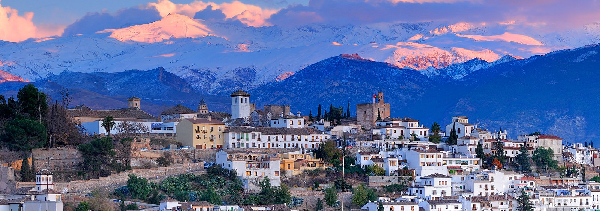
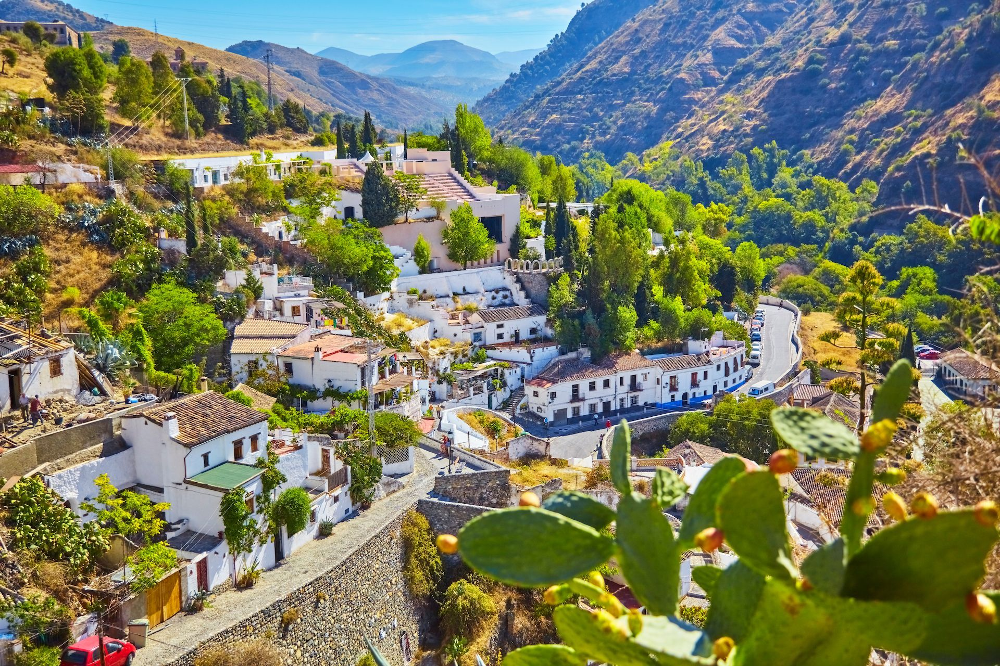

7.Barrio del Albaicín de Granada
Considerado uno de los lugares con más encanto y belleza de Granada, el barrio del Albaicín guarda la esencia de todas las épocas históricas de la ciudad, desde los fenicios hasta los árabes, pasando por los romanos, cartagineses o visigodos. Es el barrio con más solera de la ciudad. Paseando por sus callejuelas estrechas y encantadoras, y contemplando sus fuentes y monumentos podrás comprender por qué fue declarado Patrimonio de la Humanidad por la Unesco en 1984. Si hay algo obligatorio que hacer en Granada, es perderse por este barrio

8.Sacromonte de Granada
Conocido mundialmente por sus cuevas en las que se conserva el duende flamenco en estado puro, el barrio del Sacromonte de Granada es la morada de la cultura gitana y su folclore. Forma parte de las seis barriadas que conforman el distrito de Albaicín, concretamente en la zona de Valparaíso y justo frente a la Alhambra. Las vistas desde el Sacromonte son impresionantes pero hay que saber que este pintoresco barrio permite hacer un viaje en el tiempo hasta la época de los árabes, los judíos y los primeros gitanos que se asentaron allí y que hicieron de este barrio el territorio de su cultura.
